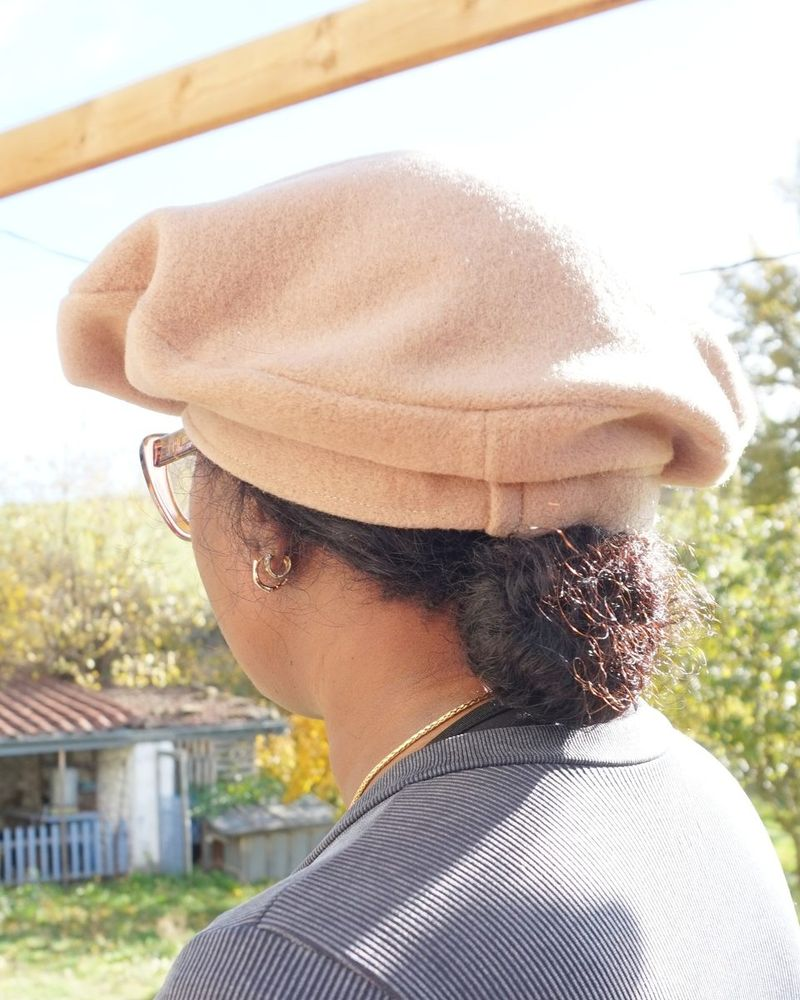

Basque beret, centred or asymmetric
A made-to-measure Basque beret (French beret), classic or falling naturally to one side, depending on the offset you choose (see settings). Enter your head circumference, the diameter and height of the beret and the offset, then download the pattern as A4 pages at 1:1 scale, or as a single page for projection. The beret is lined. Everything is calculated in your browser; none of your data is sent to me.
Settings
Seam allowance
Print calibration
The single-page PDF contains all pieces at 1:1 scale, without splitting into A4 sheets, to be projected onto the fabric (for example with Pattern Projector). The 5 × 5 cm square is used to calibrate the projection.
To print at the right scale and check the 5 × 5 cm square, see Printing correctly.
Dimensions in cm, measured on the seam line (without allowance).
Three pieces: the crown (a circle) and the side, each cut once in the main fabric and once in the lining, and the headband, in two strips to be joined (one in the main fabric and one in a secondary fabric, for instance to keep wool from touching the forehead). The side seam is placed at the narrowest point of the piece, in line with both centres. The “back”, “long side” and “front” marks match from one piece to the other, headband included.
Looking for a classic panelled beret? See the 6 or 8 panel beret pattern.
Finished berets



Exact geometric calculation of the oblique cone (unfolding of its generating lines). Always make a paper or calico test before cutting your fabric.
A problem with a pattern? Click “Copy my settings”, then paste them into your message through “Give feedback” at the bottom of the page. Nothing is sent automatically. The form is anonymous: include your email address if you would like a reply.